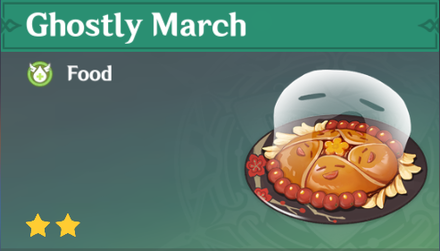

| Icon | description | |
|---|---|---|
|
Normal Attack: Secret Spear of Wangsheng |
Normal Attack: Performs up to 6 consecutive spear strikes. Charged Attack: Consumes a certain amount of Stamina to lunge forward, dealing damage to opponents along the way. Plunging Attack: Plunges from mid-air to strike the ground below, damaging opponents along the path and dealing AoE DMG upon impact. |
|
|
Elemental Skill:Guide to Afterlife |
Only an unwavering flame can cleanse the impurities of this world. Hu Tao consumes a set portion of her HP to knock the surrounding enemies back and enter the Paramita Papilio state. Paramita Papilio: Increases Hu Tao's ATK based on her Max HP at the time of entering this state. ATK Bonus gained this way cannot exceed 400% of Hu Tao's Base ATK. Converts attack DMG to Pyro DMG, which cannot be overridden by any other elemental infusion. Charged Attacks apply the Blood Blossom effect to the enemies hit. Increases Hu Tao's resistance to interruption. Blood Blossom: Enemies affected by Blood Blossom will take Pyro DMG every 4s. This DMG is considered Elemental Skill DMG. Each enemy can be affected by only one Blood Blossom effect at a time, and its duration may only be refreshed by Hu Tao herself. Paramita Papilio ends when its duration is over, or Hu Tao has left the battlefield or fallen. |
|
|
Elemental Brust:Spirit Soother |
Commands a blazing spirit to attack, dealing Pyro DMG in a large AoE. Upon striking the enemy, regenerates a percentage of Hu Tao's Max HP. This effect can be triggered up to 5 times, based on the number of enemies hit. If Hu Tao's HP is below or equal to 50% when the enemy is hit, both the DMG and HP Regeneration are increased. |
|
|
Flutter By |
When a Paramita Papilio state activated by Guide to Afterlife ends, all allies in the party (excluding Hu Tao herself) will have their CRIT Rate increased by 12% for 8s. |
|
|
Sanguine Rouge |
When Hu Tao's HP is equal to or less than 50%, her Pyro DMG Bonus is increased by 33%. |
|
|
The More the Merrier |
When Hu Tao cooks a dish perfectly, she has a 18% chance to receive an additional "Suspicious" dish of the same type. |
 |
| Icon | Constellation | Description |
|---|---|---|
 |
Crimson Bouquet | While in a Paramita Papilio state activated by Guide to Afterlife, Hu Tao's Charged Attacks do not consume Stamina. |
| Ominous Rainfall | Increases the Blood Blossom DMG by an amount equal to 10% of Hu Tao's Max HP at the time the effect is applied. Additionally, Spirit Soother will also apply the Blood Blossom effect. | |
| Lingering Carmine | Increases the Level of Guide to Afterlife by 3. Maximum upgrade level is 15. | |
| Garden of Eternal Rest | Upon defeating an enemy affected by a Blood Blossom that Hu Tao applied herself, all nearby allies in the party (excluding Hu Tao herself) will have their CRIT Rate increased by 12% for 15s. | |
| Floral Incense | Increases the Level of Spirit Soother by 3.Maximum upgrade level is 15. | |
| Butterfly's Embrace | Triggers when Hu Tao's HP drops below 25%, or when she suffers a lethal strike: Hu Tao will not fall as a result of the DMG sustained. Additionally, for the next 10s, all of her Elemental and Physical RES is increased by 200%, her CRIT Rate is increased by 100%, and her resistance to interruption is greatly increased. This effect triggers automatically when Hu Tao has 1 HP left. Can only occur once every 60s. |
| Main DPS | Sub-DPS | Support | exploration |
|---|---|---|---|
| S-Tier | - | - | C-Tier |
| Artifact Set | Bonus | |
|---|---|---|
| 1st | 
Crimson Witch of Flames |
2-PC: Pyro DMG Bonus +15%. 4-PC: Increases Overloaded, Burning, and Burgeon DMG by 40%. Increases Vaporize and Melt DMG by 15%. Using an Elemental Skill increases 2-Piece Set effects by 50% for 10s. Max 3 stacks. |
| 2nd | 
Shimenawa's Reminiscence |
2-PC: ATK +18%. 4-PC: When casting an Elemental Skill, if the character has 15 or more Energy, they lose 15 Energy and Normal/Charge/Plunging Attack DMG is increased by 50% for 10s. This effect will not trigger again during that duration. |
| 3rd | 
Marechaussee Hunter |
2-PC: Normal and Charged Attack DMG +15% 4-PC: When current HP increases or decreases, CRIT Rate will be increased by 12% for 5s. Max 3 stacks. |
| Weapons | Info | |
|---|---|---|
| 1st |
Staff of Homa |
Base ATK: 608 Bonus Stat: CRIT DMG 66.2% Skill Effect: HP increased by 20%. Additionally, provides an ATK Bonus based on 0.8% of the wielder’s Max HP. When the wielder's HP is less than 50%, this ATK Bonus is increased by an additional 1% of Max HP. |
| 2nd | 
Staff of the Scarlet Sands |
Base ATK: 542 Bonus Stat: CRIT Rate 44.1% Skill Effect: The equipping character gains 52% of their Elemental Mastery as bonus ATK. When an Elemental Skill hits opponents, the Dream of the Scarlet Sands effect will be gained for 10s: The equipping character will gain 28% of their Elemental Mastery as bonus ATK. Max 3 stacks. |
| 3rd |
Primordial Jade Winged-Spear |
Base ATK: 674 Bonus Stat: 22.1% Skill Effect: On hit, increases ATK by 3.2% for 6s. Max 7 stacks. This effect can only occur once every 0.3s. While in possession of the maximum possible stacks, DMG dealt is increased by 12%. |

As i have been playing her since march 2021, she has been my main DPS and has been my main since then.I absolutely adore her and really enjoy playing her.From her appearance, to her kit and her story lines, everything fits in soo perfectly. On the top of that, she has that cute attribute but dark humor and scary jokes, which cannot be missed.
To sum it up, she is the best character i have ever owned in any games i've played and will continue playing her.